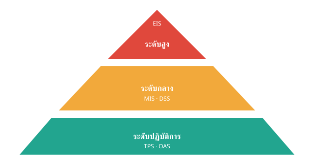

2. ระดับผู้ใช้และประเภทของ IS

| ระดับ | ใช้ข้อมูลอย่างไร |
|---|---|
| Executive (ระดับสูง) | ใช้ข้อมูลภาพรวมเพื่อวางกลยุทธ์ |
| Middle Management (ระดับกลาง) | ใช้ข้อมูลวิเคราะห์ควบคุมงาน |
| Operational (ปฏิบัติการ) | ทำงานประจำ เช่น ขาย ผลิต การเงิน |
ประเภทของระบบสารสนเทศ
| ระบบ | ความหมาย / ตัวอย่าง |
|---|---|
| TPS | ระบบงานประจำวัน เช่น POS เงินเดือน สินค้าคงคลัง |
| OAS | ซอฟต์แวร์สำนักงาน เช่น อีเมล เอกสาร ประชุมออนไลน์ |
| MIS | รายงานเพื่อผู้บริหารระดับกลาง เช่น ยอดขาย ต้นทุน |
| EIS | Dashboard ระดับสูง ตัวชี้วัด KPI |
| DSS | วิเคราะห์ข้อมูล What-if ด้านการเงิน ตลาด ความเสี่ยง |
| AIS | ระบบบัญชี เช่น งบการเงิน งบประมาณ ต้นทุน |
| ERP | ระบบใหญ่เชื่อมโยงทุกแผนก เช่น HR CRM SCM Finance |
ระบบเฉพาะทาง
- SCADA: ควบคุมงานอุตสาหกรรม เช่น โรงไฟฟ้า น้ำประปา
- CRM: บริหารลูกค้าสัมพันธ์ในค้าปลีกและบริการ